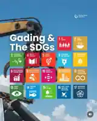

01
Waste Paper
Recovering paper-based materials so useful fibre can stay in circulation instead of going to waste.
Gading Metal turns scrap metal, waste paper and recyclable materials into resources ready to move back into manufacturing.
Gading Metal is focused on practical, responsible recovery. We collect recyclable material from commercial and industrial sources, process it, and prepare it for its next productive use.
Recovering paper-based materials so useful fibre can stay in circulation instead of going to waste.
Collecting and processing iron and steel scrap for a cleaner route back into manufacturing supply chains.
Recovering valuable non-ferrous scrap and separating it for efficient onward processing and reuse.
A focused three-stage flow keeps recyclable material moving toward its next useful life.
Commercial and industrial recyclable material is gathered for recovery.
Material streams are separated and prepared to maximise their recoverable value.
Processed material is made ready for its next role in manufacturing and production.
Resource recovery sits at the intersection of responsible production, climate action and cross-sector collaboration. Gading Metal's direction reflects the practical principles behind the circular economy.

Waste still has value when the right system exists to recover it.
Established in 2026, Gading Metal Sdn Bhd is building a recycling and resource recovery operation around scrap metal, waste paper and recyclable materials, with its factory opening in preparation.
The business is led by Aina Munirah, whose public work focuses on circular economy, resource recovery, ESG and sustainability in Malaysia.
View leadership profile ↗Talk to Gading Metal about your recyclable material stream and collection requirements.
Start a conversation ↗